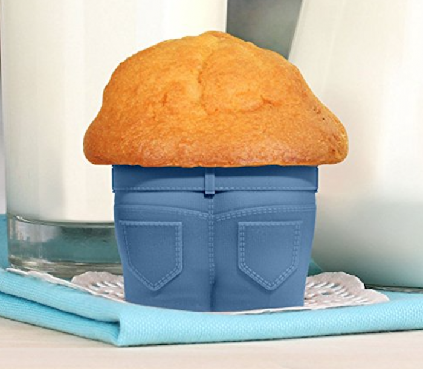

Muffin Recipe

Yummy muffin recipe! Comes with blueberries and pants, healthy and easy to bake!
Ingredients:
- Small pants
- 1/2 pint blueberries
- 5 eggs
- 1 cup flour
- 1/2 cup sugar
Steps
- Preheat oven to 425
- Mix together the eggs, flour, sugar, and blueberries in a meduim sized bowl
- Spray muffin tin with baking spray
- Pour mixture into pan, bake for 25 min
- Put pants on the muffin, she finna be thicc